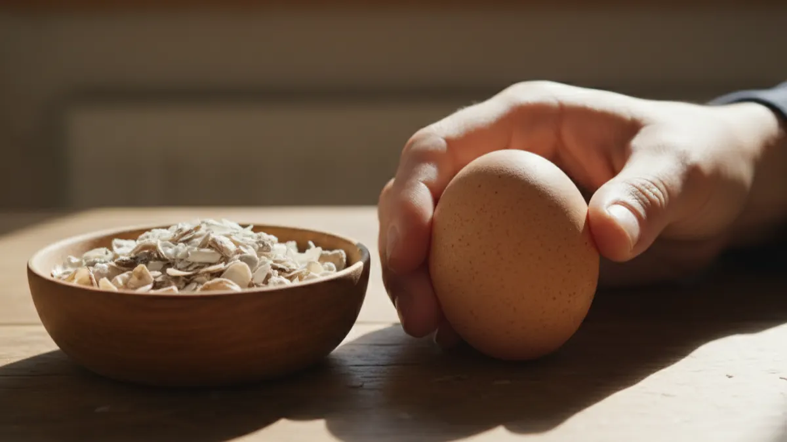

Yumurta kabuğu neden inceliyor? Kalsiyum ve çözümü
Sepetteki yumurtaların yarısı çatlak çıkıyorsa sorun tavukta değil, sofrasında olabilir. Kabuk incelmesinin gerçek nedenleri ve elde kırılan yumurtayı düzelten doz düzeni.

Sabah folluğu topluyorsun, yumurtayı sepete koyarken parmağının altında çıtırdıyor. Bir tanesi zaten çatlamış, ötekinin kabuğu kâğıt gibi ince. Aynısını satışa götürünce müşteri suratını asıyor, aracı fiyat kırıyor. Bu dert köye dönüp tavukçuluğa başlayan hemen herkesin bir noktada başına gelir ve çoğu adam suçu yanlış yere atar. Kabuğun incelmesi tavuğun huyu değil; çoğu zaman senin sofraya koyduğun rasyonun, mevsimin ya da sürünün yaşının söylediği bir mesajdır.
Kabuk dediğimiz şey yüzde 94-97 oranında kalsiyum karbonattır. Bir tavuk tek bir yumurtanın kabuğu için yaklaşık 2 ila 2,2 gram saf kalsiyum harcar. Günde bir yumurta veren tavuk, kendi iskeletindeki toplam kalsiyumun neredeyse onda birini her gün kabuğa aktarır. Bu müthiş bir yük. Sofrada yeterli kalsiyum yoksa tavuk açığı kendi kemiğinden kapatır, bir süre idare eder, sonra kabuk incelir, kemikleri boşalır ve iş çığırından çıkar.
Kabuk neden inceliyor? Asıl nedenler
Herkes ilk anda "kalsiyum eksik" der ama iş o kadar basit değil. İnce ve kırık kabuk yumurta bir sonuçtur; arkasında birbirinden farklı en az beş neden yatar. Doğru nedeni bulmadan sağa sola kalsiyum atmak parayı çöpe atmaktır.
1. Rasyonda kalsiyum yetersizliği
En yaygın sebep bu. Yumurtacı tavuğun yeminde en az yüzde 3,5-4 kalsiyum olmalı. Sıradan buğday, arpa, mısır kırığıyla beslenen sürüde bu oran yüzde 0,5'i bile bulmaz. Köyde "tavuğa ne olacak, tahıl atarım yeter" mantığı işte tam burada duvara çarpar. Ucuz yem tuzağının faturası ince kabuk olarak geri döner.
2. D3 vitamini eksikliği (güneşsizlik)
Kalsiyumu bol bol versen bile tavuk onu bağırsaktan ememezse hiçbir işe yaramaz. Emilimin anahtarı D3 vitaminidir ve D3, deriye vuran güneşle sentezlenir. Kapalı, karanlık, penceresiz bir kümeste tutulan sürüde kalsiyum yeminden geçip gübreyle dışarı çıkar. Kışın güneşin az olduğu aylarda bu açık iyice büyür; ışık programını doğru kurmak bu yüzden önemli, konuyu kümes aydınlatması ve ışık programı yazısında ayrıntılı işledim.
3. Yaşlı sürü
Tavuk yaşlandıkça kabuk kalitesi doğal olarak düşer. İlk yıl parlak, sağlam kabuk veren tavuk, ikinci yumurtlama döneminde daha büyük ama daha ince kabuklu yumurta yapar. Yumurta iri, kabuktaki kalsiyum aynı; ister istemez daha ince bir tabakaya yayılır. Bu bir hastalık değil, yaşın getirdiği bir gerçek. Sürünün verim ömrünü yumurtacı tavuğun verim ömrü yazısında konuştuk; ikinci yılını dolduran tavukta kabuk şikâyeti artıyorsa bu normaldir.
4. Sıcak stresi (yazın soluma alkalozu)
Bu, çoğu üreticinin gözden kaçırdığı sinsi bir sebep. Yazın 30 derecenin üstünde tavuk serinlemek için ağzını açıp sık sık soluk alır. Bu hızlı solumayla kandan fazla karbondioksit atılır, kanın asit-baz dengesi bozulur, buna soluma alkalozu denir. Sonuçta kabuğun hammaddesi olan karbonat üretimi düşer, kalsiyum bol olsa bile kabuk incelir. Bir de sıcakta iştah kapanır, tavuk yem yemez, kalsiyum girişi düşer. Yaz aylarında toplu kabuk incelmesi görüyorsan ilk bakacağın yer sıcaklıktır; kümesi serin tutmanın yollarını yazın kümes nasıl serin tutulur yazısında topladım.
5. Hastalık: IB ve EDS
Bazen sofra da yerinde, mevsim de uygun ama kabuk yine bozuk. Aniden buruşuk, şekilsiz, kireç lekeli ya da kabuksuz yumurtalar çıkıyorsa akla iki virüs gelir: bronşit (IB) ve yumurta düşüş sendromu (EDS). Bunlar kabuk bezini bozar. Verim de birlikte düşerse iş ciddidir; belirti-aşı ilişkisini tavuk hastalıkları ve aşı takvimi yazısından kontrol et. Bu iki hastalığın çaresi kalsiyum değil, önceden aşıdır.
6. Fazla fosfor ve mineral dengesizliği
Az bilinen ama gerçek bir tuzak. Rasyonda fosfor çok yükselirse kalsiyumla dengesi bozulur ve kalsiyum emilimi düşer. Yumurtacıda kalsiyum-fosfor oranı kabaca 5:1 ile 12:1 arasında olmalı. Kepek gibi fosforu bol yemleri fazla verip kalsiyumu ihmal edersen kabuk yine incelir.
Belirti, neden, çözüm: hızlı teşhis tablosu
Elindeki yumurtaya bakarak nedeni büyük ölçüde tahmin edebilirsin. Aşağıdaki tabloyu folluğun başında bir kez oku, sürünü daha iyi okursun.
| Gördüğün belirti | En olası neden | İlk yapılacak |
|---|---|---|
| Genel ince ama düzgün kabuk | Rasyonda kalsiyum azlığı | Yumurta yemi + serbest kaba kalsiyum |
| İnce kabuk, tavuklar sırtı çıkık, ayakta zorlanıyor | D3 eksikliği / güneşsizlik | D3 takviyesi, gündüz gün ışığı |
| İri yumurta, hafif ince kabuk, verim yerinde | Yaşlı sürü (2. yıl) | Kaba kalsiyumu artır, normal karşıla |
| Yazın toplu incelme, tavuklar soluyor | Sıcak stresi / alkaloz | Serinletme, gölge, akşam yemlemesi |
| Buruşuk, şekilsiz, kabuksuz + verim düşüşü | IB / EDS (hastalık) | Aşı durumu ve veteriner kontrolü |
Kabuk sertleştirme: doz ve düzen
Teşhisi koyduysan çözüm çoğu zaman aynı yerde toplanır: kalsiyumu hem yeme kat, hem de ayrı bir kapta serbest ver. İşin can alıcı noktası şu; kalsiyumun tamamını öğütülmüş halde yeme karıştırmak yeterli değildir. Tavuk kabuğu gece boyunca, karanlıkta örer. Akşam ayrı verilen iri taneli kalsiyum sindirim sisteminde yavaş çözünür ve tam gece o kabuk örülürken kana kalsiyum salar. İşin sırrı budur.
| Kaynak | Ne zaman / nasıl | Kaba miktar |
|---|---|---|
| Yumurta yemi (yüzde 3,5-4 kalsiyumlu) | Ana yem, gün boyu | Tavuk başı 110-130 g/gün |
| İstiridye / midye kabuğu grit | Ayrı kapta serbest, öğleden sonra tazele | Tavuk başı 4-5 g/gün (serbest) |
| Mermer tozu / iri kireç taşı | Serbest kapta, istiridyeye alternatif | Tavuk başı 4-5 g/gün (serbest) |
| D3 vitamini (suda çözünen) | Kışın / güneşsiz dönemde 3-5 gün kür | Etikete göre, litreye ölçekli |
| Kırılmış yumurta kabuğu (ev şartı) | Kurutup ezip serbest kapta | İhtiyaca göre serbest |
Bir de şunu unutma; kabuk kalitesi doğrudan iştaha bağlıdır. Yemini yemeyen tavuk kalsiyumu da almaz. Yazın sıcakta iştah kapandığı için yemlemenin serin saatlere, sabah erkene ve akşam güneş çekilince olmasına dikkat et. Karanlıkta tavuk yem yemez ama gündüz iyi doyan sürü, geceki kabuk örgüsü için deposunu doldurmuş olur. İştahı ve verimi düşüren kümes hatalarını topluca görmek istersen yumurta verimini düşüren kümes hataları yazısı iyi bir kontrol listesi.
Kabuk sorununun görünmeyen tarafı: barınak
Doğru yemi verip D3'ü tamamlasan bile tavuk kavurucu sıcakta ya da nemli, havasız bir kümeste soluk soluğa kalıyorsa kabuk yine bozulur. Sıcak stresi bahsinde anlattım; yazın çatı altı 40 dereceyi bulan sac ya da yalıtımsız barınakta öğle sıcağında bütün sürü ağzı açık solur, alkaloz başlar ve o gün örülen kabuk ince çıkar. Yani kabuk meselesi bir yandan sofra işi, bir yandan da çatı işidir.
İşte tam bu noktada barınağın yalıtımı devreye girer. Kışın donmayan, yazın kavurmayan bir kabuk, sürünün gün boyu sabit bir konforda kalmasını, iştahının açık, soluk düzeninin sakin olmasını sağlar. Sıcak stresini baştan kesersen kalsiyumu boşa harcamazsın.

750 Tavukluk Tavuk Çadırı
Yazın alkalozu, kışın verim düşüşünü baştan kesmek için 3-4 kat yalıtımlı brandalı bir çadıra geç; 750 tavukluk model orta ölçek yumurtacı için sıcaklığı dengede tutar, kabuk kalitesini korur.
Çadır kümesin sıcağı ve soğuğu nasıl dengelediğini, betona göre maliyet farkını merak ediyorsan kümes maliyeti: betonarme mi çadır mı karşılaştırmasına göz atabilirsin. Serinletme, gölgeleme ve havalandırma detayları için de yazın kümes serin tutma yazısını tekrar hatırlatayım; ikisi birlikte okununca kabuk resmi tamamlanır.
Nereden başlamalı? Adım adım plan
Elinde ince kabuklu yumurta varsa panik yapmadan şu sırayı izle:
- Önce yeme bak. Yumurta yemi mi veriyorsun yoksa tahıl mı atıyorsun? Yem yüzde 3,5-4 kalsiyumlu değilse iş burada biter, önce onu düzelt.
- Ayrı bir kaba istiridye ya da mermer kabuğu grit koy, öğleden sonra tazele. Birkaç gün içinde fark görürsün.
- Kış ya da güneşsiz dönemse 3-5 günlük D3 kürü yap, gündüz sürüyü gün ışığına çıkar.
- Yazsa serinletmeye geç; gölge, hava akımı, akşam yemlemesi. Su hep serin ve bol olsun.
- Kabuk aniden buruşuk-şekilsiz olduysa ve verim düştüyse hastalıktan (IB/EDS) şüphelen, veterinerle konuş.
Son olarak şunu aklında tut: kabuk, sürünün sağlık karnesidir. İnce ya da çatlak yumurta gördüğünde tavuğa kızma, sofrasını ve barınağını sorgula. Ucuz tahılla beslenip kavurucu bir sacın altında tutulan tavuk sana hep ince kabuk verir; doğru yem, akşam avucuna serbest kalsiyum ve serin bir barınak ile aynı tavuk bir hafta içinde çıtır çıtır, sağlam kabuklu yumurtaya döner. Ölçü aletin folluk; her sabah kabuğu parmağınla yokla, sürü sana ne durumda olduğunu kendisi söyler.
Sık sorulanlar
Yumurta kabuğu neden inceliyor?
Kabuk sertleştirmek için tavuğa ne verilmeli?
Kaba kalsiyumu neden akşamüstü vermek gerekiyor?
Kalsiyum veriyorum ama kabuk yine ince, neden?
Yazın kabuklar neden daha çok kırılıyor?
Ev şartında kırık yumurta kabuğu tavuğa verilir mi?
Projenizi birlikte planlayalım
Kapasitenizi ve bölgenizi yazın; ölçü ve teklifi birlikte çıkaralım.
Kapasitenizi yazın